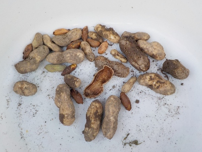
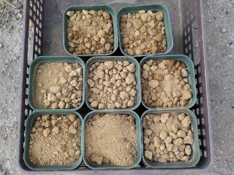
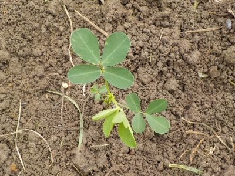
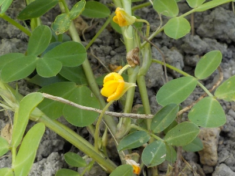

落花生の掘り残しを拾いました。
更新日 : 2025/11/22

ちょっと前に落花生を掘ったんですが、まだ残っているんじゃないかと再度掘り直しました。
出てきたのはこれだけです。これを乾燥させて、来年タネ蒔きしようと思っています。
殻がダメになったものや小さいものとかありますが、これだけあったら何個かは発芽するんじゃないかと考えています。
更新日 : 2025/11/22

ちょっと前に落花生を掘ったんですが、まだ残っているんじゃないかと再度掘り直しました。
出てきたのはこれだけです。これを乾燥させて、来年タネ蒔きしようと思っています。
殻がダメになったものや小さいものとかありますが、これだけあったら何個かは発芽するんじゃないかと考えています。
更新日 : 2026/05/17

気温が高くなったので落花生の種蒔きしました。1つの鉢に2粒蒔いてます。
何個発芽するでしょうね？自分で収穫して乾燥保存したものなので、半分でも発芽したらラッキーかもしれません。
更新日 : 2026/06/21

沢山蒔いた種ですが、芽が出たのは3本だけでした。
来年は大粒なものを、もっと沢山タネとして残しておこうと思いました。
更新日 : 2026/07/26

今まで雑草が茂っていたので花が咲いてるのに気づきませんでした。
もう花が咲く季節になってたんだ。
炒りピーナッツを作るのはちょっと面倒。